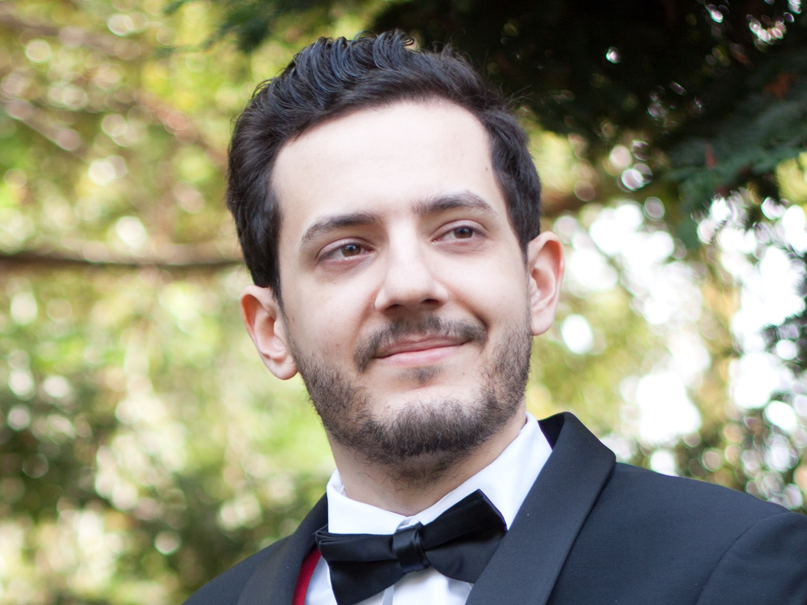
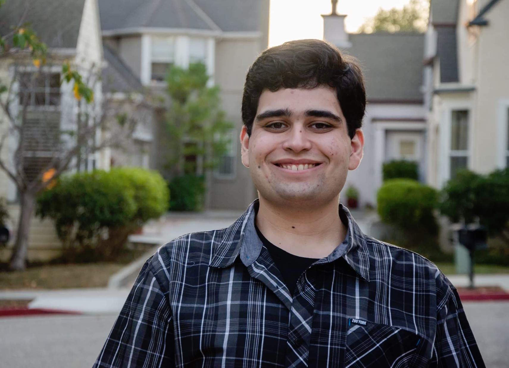

------------------------------------------------------------------------ John (Andy) Baden is a engine programmer and designer at Bad Cop Studios. He mainly focused on designing and implementing the core engine that Project Perfect Citizen is built upon. Additionally, he lent his skills to the iteration and design of Project Perfect Citizen's levels and core mechanics. Andy has always strived to develop fun, thought provoking and engaging games. Project Perfect Citizen is no exception. He grew up playing a wide variety of games and RPGs and decided to pursue his passion for them at UCSC. His favorite games include: Dark Souls, Monster Hunter, Catherine, Power Stone 2, and Phoenix Wright: Ace Attorney. Twitter @Jabaden LinkedIn: www.linkedin.com/in/JAndrewBaden Website: http://jabaden.com ------------------------------------------------------------------------
Alex Vincent is the senior producer and project manager at Bad Cop Studios. His inspiration for the team's game, Project Perfect Citizen, came from the combination of the uncomfortable power dynamic created from playing Paper's Please and the novel intimacy from playing Gone Home. Alex's diligent vision combined with his ability to move the team forward has made him a strong leader on all his projects. His passion for reading, watching, and playing stories of all kinds combined with his experience as an actor gives him an articulate understanding of how entertainment moves us. Simply put, Alex strives to push the boundaries of storytelling through games in order to create unique and unforgettable experiences. His favorite games include: The Last of Us, Uncharted 2: Among Thieves, Shadow of the Colossus, Diablo II, and The Binding of Isaac. Twitter: @alexrvincent LinkedIn: https://www.linkedin.com/in/alexrvincent ------------------------------------------------------------------------
Brandon Gomez is a level designer and programmer for Bad Cop Studios. He has created the game's procedurally generated dialog using James Ryan and Ethan Seither's, PhD students, Expressionist tool. Brandon has an abundant knowledge in programming and game design; he also has a bold sense of unique aesthetics and user friendly interfaces. He will often challenge himself to create a unique interactive experience that will move the player emotionally. In addition, Brandon has a passion for music and interactive art. His favorite games are Shadow of the Colossus, Portal, and Halo CE. Twitter: @a_black_beetle LinkedIn: https://www.linkedin.com/in/brandonlgomez Website: brandon-gomez.com ------------------------------------------------------------------------
Mark Biundo is a game designer and programmer for Bad Cop Studios. As the Lead Designer on Project Perfect Citizen, Mark was responsible for ensuring the gameplay systems reinforce the rhetoric and engage the player with the controversy of government surveillance. He also worked extensively on the game's procedural generation, creating unique characters whose personalities affect their dialogue choices. Mark is passionate about indie development and building interactive media that not only entertains players but challenges their worldviews and forces them think deeply about social issues that affect their daily lives. Mark's favorite contemporary games are Path of Exile, Dark Souls, League of Legends, Diablo III, and Hearthstone. LinkedIn: https://www.linkedin.com/in/mark-biundo-26150a10b ------------------------------------------------------------------------
Jason Brisson is the Lead Writer and Social Media Coordinator for Bad Cop Studios. Meeting regularly with the Design Team, he rapidly prototypes collective brainstorms into playable narratives. He has designed and developed central characters, plotlines, and player experiences with zeal. Jason has been writing works of interactive fiction since 2010, and is exultant to see games growing as an expressive and critical medium. As an indie designer and artist, Jason is concerned with law and the way it situates our lives. He believes political revolution is possible through art, and the bilateral nature of games media positions them in the vanguard. Jason’s favorite games include: Psychonauts, Vesper 5, Dark Souls, Journey, Magic: The Gathering, and Crypt of the Necrodancer. Twitter: @JsonBrisson LinkedIn: http://www.linkedin.com/in/jason-brisson-33775453 Website: www.jsonbrisson.com ------------------------------------------------------------------------
Michael Lowe is the Technical Artist and Artist Coordinator, as well as a game programmer for Bad Cop Studios. He maintains communication between the art team and programming team and ensures that all assets can be easily integrated into the game. Michael has worked in implementing much of the game's visual components and user interface within the simulated desktop environment. Additionally, he has implemented a system for procedurally generated character art, capable of generating over 130,000,000 unique combinations. Michael started learning to program mobile games in 2008 with the release of the first iPhone SDK and has spent the past 8 years expanding his skill set and gaining practical experience with game development. He is also passionate about digital art and sound design. Favorite games include Donkey Kong Country, House of The Dead II, Dante's Inferno, Minecraft, and Borderlands II. Website: michaelmlowe.com LinkedIn: https://www.linkedin.com/in/michael-lowe-73a216111 ------------------------------------------------------------------------
Daniel Luna is the lead programmer and engine designer for Bad Cop Studios. He designed the engine used by Project Perfect System, implemented many parts of the engine including the window system, object system, event system, and the tutorial system. Daniel spends his spare time working on his own over-ambitious programming projects and playing games of all sorts. Daniel’s favorite game genres include strategy games, choice / consequence games, rhetorical games, bluffing games, and the occasional action game. Examples include XCOM 2, Spec Ops: The Line, The Witcher Trilogy, Braid, Chess, Darkest Dungeon, Antichamber, The Stanley Parable, and Sheriff of Nottingham. Twitter: https://twitter.com/daniel_j_luna LinkedIn: https://www.linkedin.com/in/daniel-luna-2b681490 ------------------------------------------------------------------------
Nader Sleem is a engine and gameplay programmer for Bad Cop Studios. He has worked on building the frameworks of levels, the game state manager, and the debugging/logging system for the engine, while also implementing gameplay mechanics, game loading, and level transitions. Nader is a passionate gamer and an equally passionate programmer. He has an interest in a variety of game genres and desires to create a broad range of interactive media. Some of Nader's favorite game include Dark Souls, Sonic the Hedgehog, the Civilization series, and Dragon Age: Origins. Twitter: https://twitter.com/the_Rare_Man LinkedIn: https://www.linkedin.com/in/nadersleem ------------------------------------------------------------------------